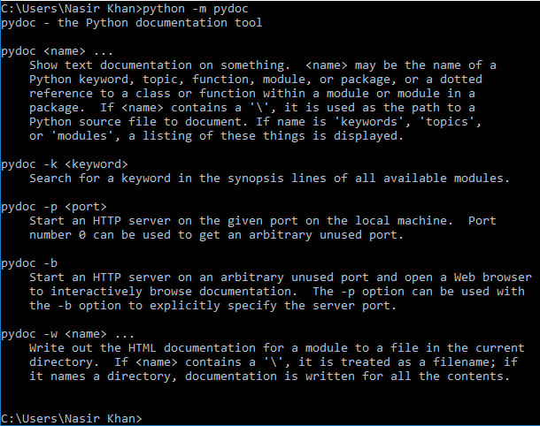
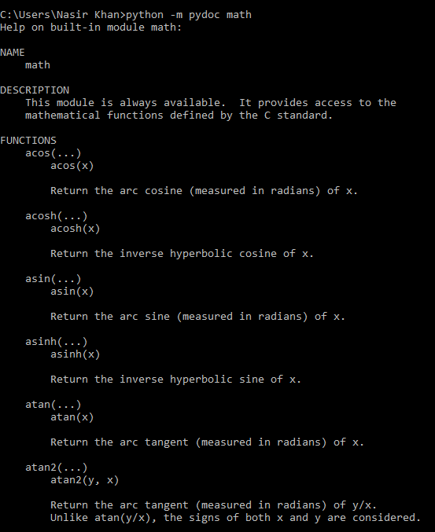
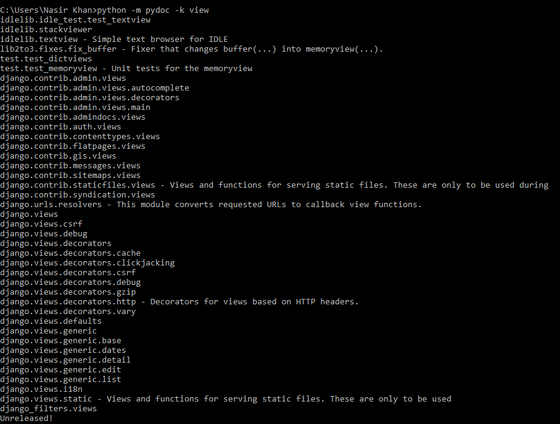
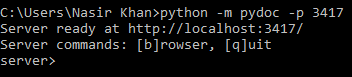
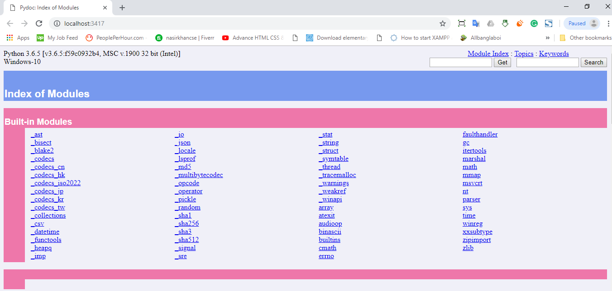
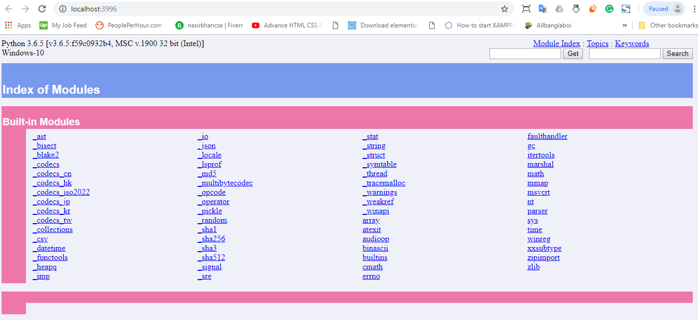

Documentation is main source of learning any programming language and framework. How many people know that python has a module named pydoc to learn python?
Open the terminal or command prompt, write python -m pydoc and hit enter. You will see a all documentation tools like below image. 
It contains 5 tools.
name may be the name of a Python keyword, topic, function, module, or package, or a dotted reference to a class or function within a module or module in a package.
Example: python -m pydoc math
This will show all math functions of python like following picture.
If you scroll down, you will get all math functions and value of constant like pie value, sigma, beta etc.
It will search the keyword you provided and show you available modules that are connected with your keyword.
Example: python -m pydoc view
This will show all modules of python that are related with view keyword like following picture.
Start an HTTP server on the given port on the local machine. Port number 0 can be used to get an arbitrary unused port.
Example: python -m pydoc -p 3417
This will create an HTTP server at port 3417.
Now you need to open the server in browser. Just press b and hit enter. It will open the server in your machine's default browser like below image.
To stop the server, just write q in the cmd/terminal and hit enter.
Start an HTTP server on an arbitrary unused port and open a web browser to interactively browse document.
Example: python -m pydoc -b
This will create an HTTP server at any unused port and open documentation as web in a browser directly.
Here server is created in port 3996. It can be changed anytime, if this port will be busy.